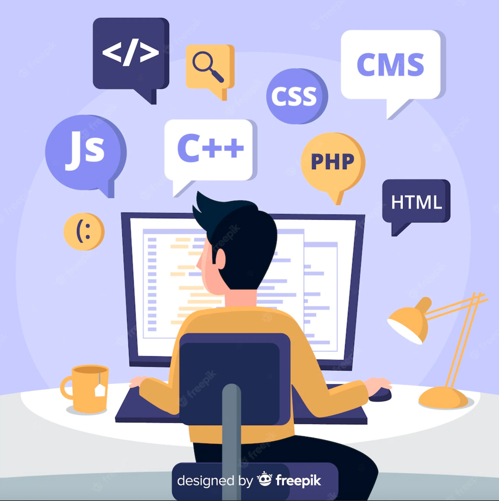

Top 10 des langages informatiques les plus utilisés
Les développeur·se·s, ou celleux qui murmuraient à l’oreille des machines…
Les langages informatiques sont une science ayant permis à l’Homme de communiquer avec les ordinateurs. Grâce au code, nous sommes capables de leur écrire, de les décrypter et de leur donner des instructions.
Il s’agit du trait d’union virtuel nous offrant l’opportunité d’interagir avec ces objets, qui contiennent aujourd’hui la majeure partie de nos activités quotidiennes. Si tu peux lire cette page web, te faire livrer ton déjeuner ou réserver ton train, c’est bel et bien grâce aux développeur·se·s qui repoussent toujours plus les limites de nos ordinateurs à travers des langages informatiques performants. Ces professionnel·le·s du code ont suivi, pour la plupart, une formation de développeur web.
Les langages informatiques sont un monde fascinant en constante évolution. Il en existe des milliers, et autant sont encore à créer ! Certains d’entre eux ont tout de même une place de choix dans l’univers de la programmation… Nous t’en parlons dans cet article.
Qu’est-ce qu’un langage informatique ?
De la même manière que l’on parle le français ou l’anglais (dit langages naturels) pour communiquer entre êtres-humains, le langage informatique permet de communiquer avec… les machines. Constitué de données binaires (0,1), le langage machine nous est initialement incompréhensible. C'est pourquoi des langages intermédiaires ont été créés, afin de créer un lien entre les ordinateurs et nous.
Le code écrit dans un langage informatique est ensuite transformé en langage machine pour être exploitable par le processeur. Techniquement, la programmation informatique est donc une forme d’écriture virtuelle qui nous permet d’échanger avec les ordinateurs dans un langage compréhensible par les deux partis.
Un langage informatique, kézako ? Alphabet, vocabulaire, grammaire, syntaxe, traduction… Les nombreux langages informatiques existants aujourd’hui ont chacun leurs spécificités. Ils permettent de formuler des algorithmes et de créer des programmes informatiques capables de les appliquer.
Rédiger un code source, c’est donc donner des instructions à une machine pour qu’elle exécute ce que l’on attend. C’est grâce à des lignes de code que tu peux surfer sur Google, chatter sur Facebook, commander sur Deliveroo, etc.
Le code est plus que jamais au cœur de nos vies ! Comprendre ce qui se trame en coulisses permet de mieux appréhender notre environnement. Et dans les coulisses, on parle non pas en arabe ou chinois, mais en Python, Java ou Ruby…
Top 10 des langages informatiques en 2023
| Ayg2022 | Aug2023 | Change | Programming Language | Ratings | Change |
|---|---|---|---|---|---|
| 1 | 1 | Python | 13.33% | -2.30% | |
| 2 | 2 | C | 11.41% | -3.35% | |
| 3 | 4 | ↑ | C++ | 10.63% | +0.49% |
| 4 | 3 | ↓ | Java | 10.33% | -2.14% |
| 5 | 5 | C# | 7.04% | +1.64% | |
| 6 | 8 | ↑ | JavaScript | 3.29% | +0.89% |
| 7 | 6 | ↓ | Visual Basic | 2.63% | -2.26% |
| 8 | 9 | ↑ | SQL | 1.53% | -0.14% |
| 9 | 7 | ↓ | Assembly language | 1.34% | -1.41% |
| 10 | 10 | PHP | 1.27% | -0.09% |
L’index TIOBE, mis à jour chaque mois par une communauté de programmateurs·rices, est un indicateur qui te permet de savoir quels sont les langages informatiques les plus en vogue. Ils sont classés par popularité, et non par qualité.
Apprenti·e ou développeur·se aguerri·e, tu n’es pas sans savoir que le code est une discipline vivante, en constante mutation. Il faut aimer apprendre en continu et se lancer des défis !
Cet index t’aide à rester à l’affût des tendances en matière de langage informatique. Tu trouveras plus d’infos sur la méthode de l’index TIOBE par ici. On a décrypté pour toi le palmarès d’aout 2023 des langages informatiques les plus populaires.